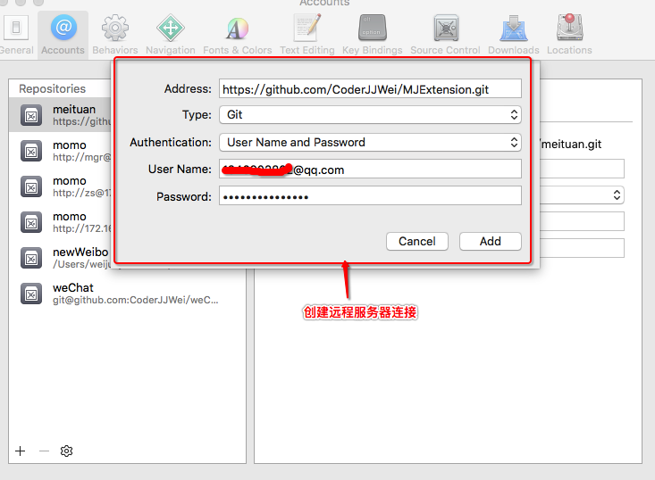
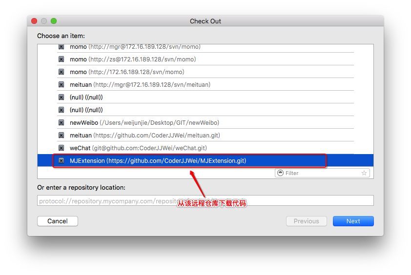
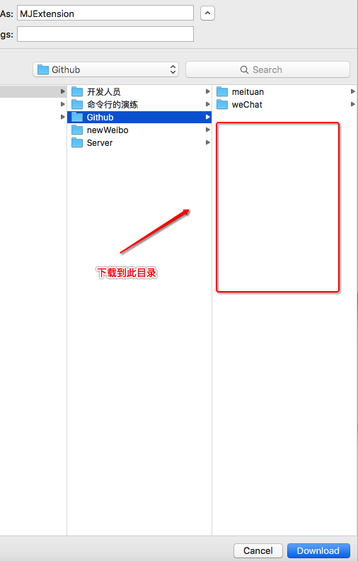
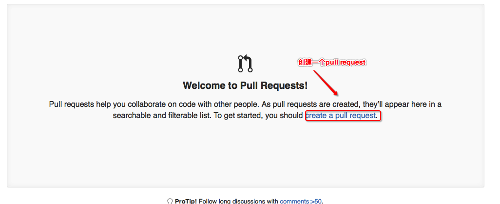
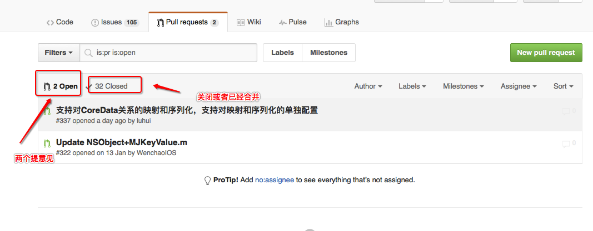
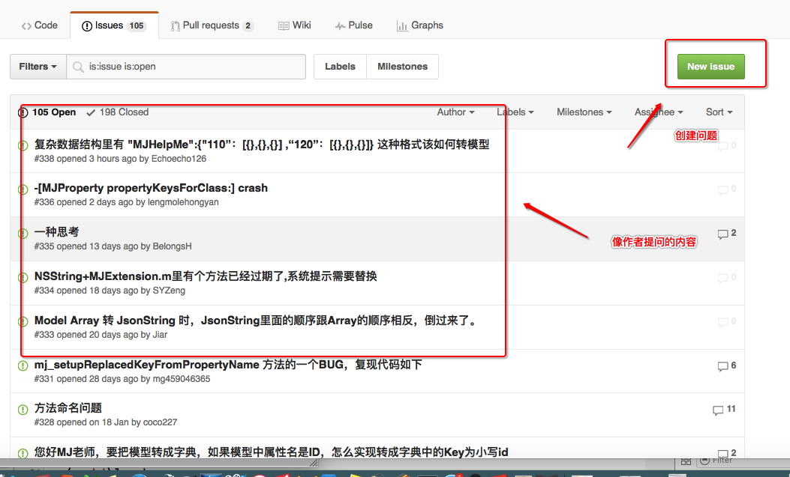
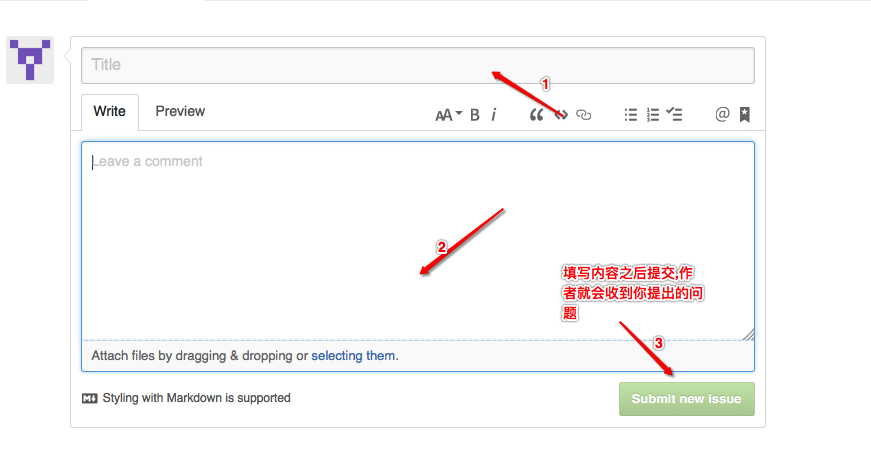

Github的其他用法
- 一.给MJExtension框架提意见
1.进入到github网站,搜索MJExtension
2.点击MJExtension
3.点击Fork到自己的仓库中
4.以HTTP的验证方式,复制地址
5.xcode->偏好设置->添加远程仓库
6.选中添加的远程仓库,点击next
7.下载到github目录8.随意修改点内容提交到远程代码库
9.github网站查看修改的内容
10.点击pull requests提交请求
11.点击create a pull request12.在此界面可以查看修改的内容,点击create pull request
13.填入title与内容点击create pull request就能提交了(建议如果不是很重要的内容,尽量不要去打扰原作者)
- 二.点击pull request查看当前提交的以及作者处理的内容 
- 三.点击Issues可以查看对作者提出的问题

填入标题以及内容点击summit就能提交了 - 二.总结
1.如果想给某个框架的作者提意见,可以先将框架fork到自己的仓库中,clone后修改再push到上来,之后向作者提意见 2.如果对框架不明白不会使用的地方可以通过创建Issues向作者提问